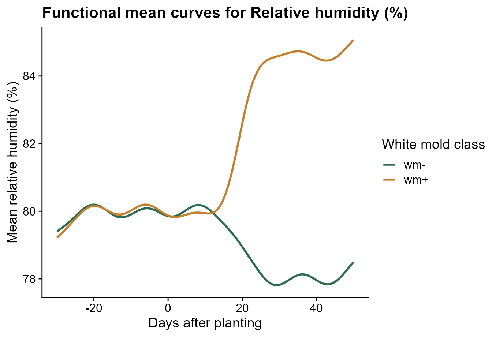
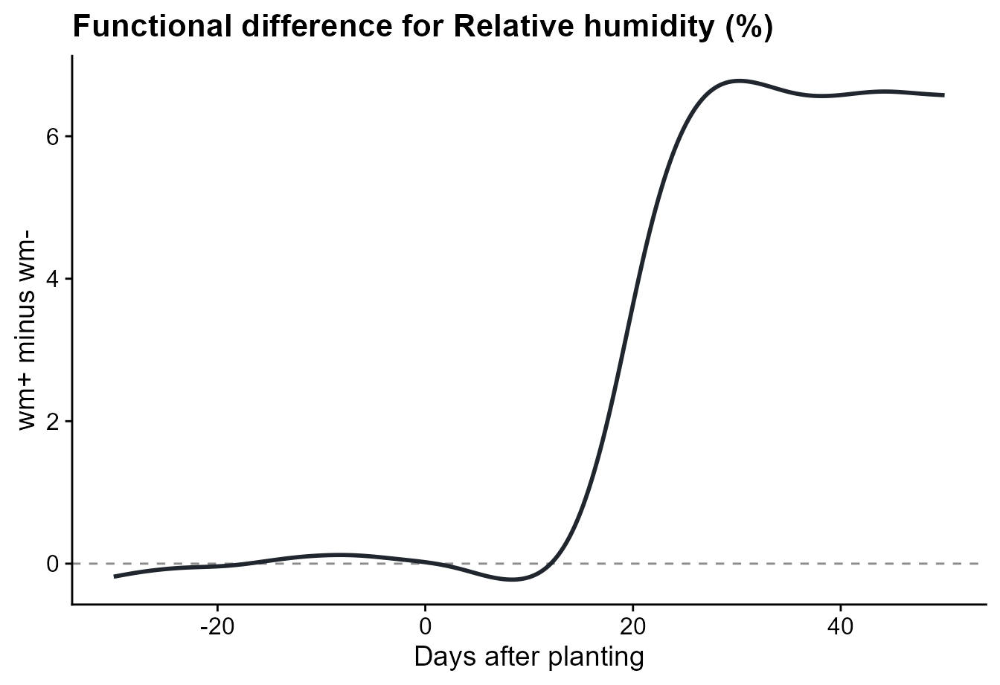
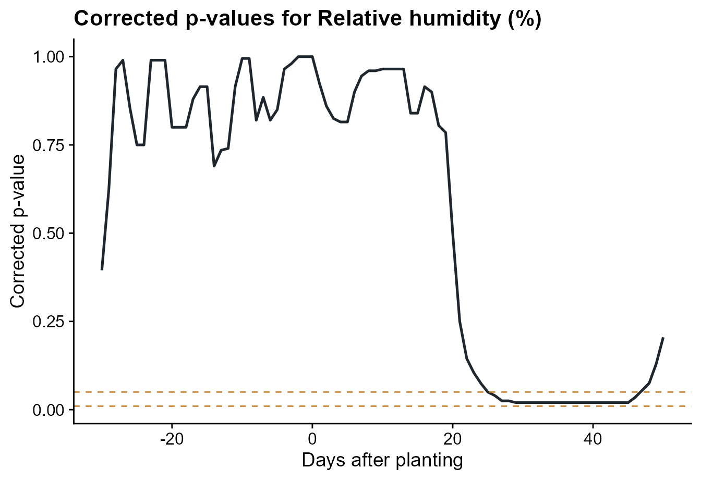
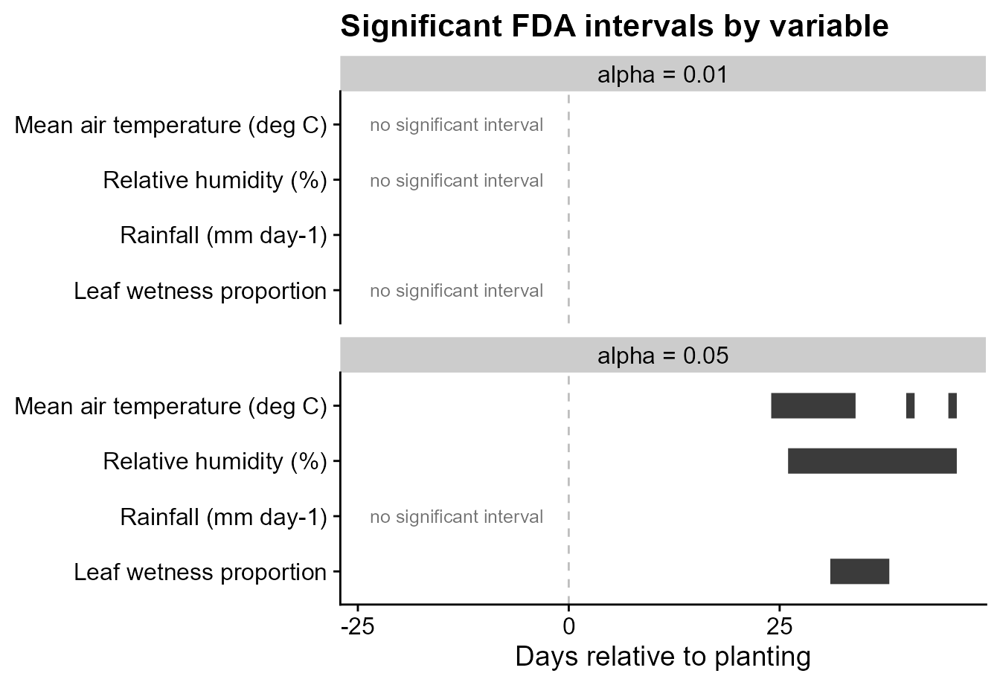
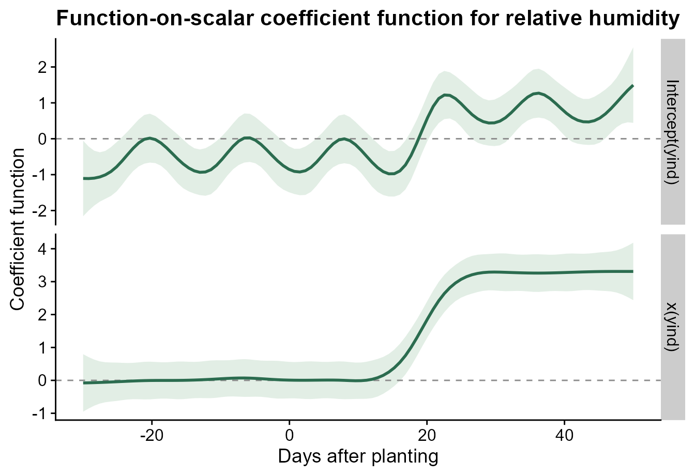
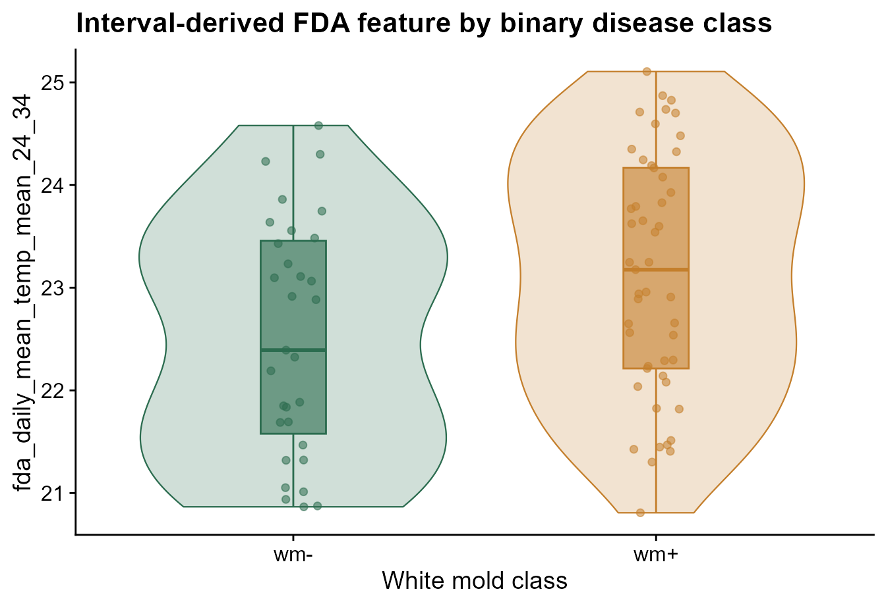

Functional Data Analysis for Weather Series
Source:vignettes/functional-data-analysis.Rmd
functional-data-analysis.RmdRun this setup first. It loads windcut, the small
tidyverse pieces used for displaying tables, and cowplot
for the plot theme. It also keeps chunk messages out of the rendered
tutorial.
Why FDA in windcut?
Window-pane analysis stratifies a time series into user-defined windows and computes summary statistics inside each one. Functional data analysis asks a different question: whether the full weather trajectory differs between disease classes and, if so, where along the time axis that difference appears.
This vignette is inspired by the functional data analysis and feature engineering strategy described by Alves et al. (2025). The package workflow is more general than the analysis in that paper: the user chooses the weather variables, smoothing method, p-value threshold, and number of permutations.
The main user-facing function is run_fda_analysis(). It
does the repetitive work that users should not have to code by hand:
building subject-by-time matrices, computing smoothed group means,
running interval-wise tests for every weather variable, and storing tidy
outputs for plots and feature extraction.
The lower-level functions are still available for advanced users, but most FDA workflows should start with this sequence:
| Step | Function |
|---|---|
| Run the workflow | run_fda_analysis() |
| Plot class mean curves | plot_fda_means() |
| Plot class differences | plot_fda_difference() |
| Plot corrected p-values | plot_fda_p_values() |
| Plot significant intervals | plot_fda_intervals() |
| Extract modeling features | extract_fda_features() |
Important. This vignette uses the bundled
fda_demo_data dataset so the FDA workflow stays focused on
analysis and interpretation.
Step 1: Load the demo data
The demo object contains daily weather series, one binary disease
assessment per site, and display labels for the weather variables. The
disease classes are wm- and wm+, matching the
binary white mold example.
data(fda_demo_data)
weather_daily <- fda_demo_data$weather_daily
assessments <- fda_demo_data$assessments
variable_specs <- fda_demo_data$variable_specs
knitr::kable(head(weather_daily))| time | daily_mean_temp | daily_mean_rh | daily_sum_rain | daily_mean_leaf_wetness | dap | site_id |
|---|---|---|---|---|---|---|
| 2024-01-01 | 22.58750 | 79.36167 | 6.31 | 0.2916667 | -30 | S01 |
| 2024-01-02 | 23.31333 | 78.97583 | 8.82 | 0.2500000 | -29 | S01 |
| 2024-01-03 | 23.73083 | 76.22583 | 1.56 | 0.1666667 | -28 | S01 |
| 2024-01-04 | 23.51708 | 78.94208 | 6.48 | 0.2500000 | -27 | S01 |
| 2024-01-05 | 23.37250 | 80.19167 | 4.97 | 0.1666667 | -26 | S01 |
| 2024-01-06 | 23.02083 | 79.07500 | 0.87 | 0.2083333 | -25 | S01 |
| site_id | assessment_id | assessment_time | response_type | wm | wm_class |
|---|---|---|---|---|---|
| S01 | S01 | 2024-03-21 | binary | 0 | wm- |
| S02 | S02 | 2024-03-21 | binary | 0 | wm- |
| S03 | S03 | 2024-03-21 | binary | 0 | wm- |
| S04 | S04 | 2024-03-21 | binary | 0 | wm- |
| S05 | S05 | 2024-03-21 | binary | 1 | wm+ |
| S06 | S06 | 2024-03-21 | binary | 0 | wm- |
| variable | label |
|---|---|
| daily_mean_temp | Mean air temperature (deg C) |
| daily_mean_rh | Relative humidity (%) |
| daily_sum_rain | Rainfall (mm day-1) |
| daily_mean_leaf_wetness | Leaf wetness proportion |
The FDA functions expect the disease class to be available in the same long table as the weather measurements. This is ordinary data preparation: one row is one site at one time point.
subject_data <- weather_daily %>%
left_join(assessments %>% select(site_id, wm_class), by = "site_id")
knitr::kable(
subject_data %>%
select(site_id, dap, daily_mean_rh, daily_sum_rain, daily_mean_leaf_wetness, wm_class) %>%
slice_head(n = 6)
)| site_id | dap | daily_mean_rh | daily_sum_rain | daily_mean_leaf_wetness | wm_class |
|---|---|---|---|---|---|
| S01 | -30 | 79.36167 | 6.31 | 0.2916667 | wm- |
| S01 | -29 | 78.97583 | 8.82 | 0.2500000 | wm- |
| S01 | -28 | 76.22583 | 1.56 | 0.1666667 | wm- |
| S01 | -27 | 78.94208 | 6.48 | 0.2500000 | wm- |
| S01 | -26 | 80.19167 | 4.97 | 0.1666667 | wm- |
| S01 | -25 | 79.07500 | 0.87 | 0.2083333 | wm- |
Before running FDA, it is worth checking that both disease classes are present.
| wm_class | n_sites |
|---|---|
| wm- | 31 |
| wm+ | 49 |
Step 2: Run the FDA workflow
This single call is the core of the vignette. The user tells
windcut which columns identify the site, time axis, disease
class, and weather variables. The same call also chooses the smoothing
method, p-value thresholds, and number of permutations.
fda_fit <- run_fda_analysis(
data = subject_data,
id_col = "site_id",
time_col = "dap",
group_col = "wm_class",
value_cols = variable_specs$variable,
value_labels = variable_specs,
smooth_method = "spline",
smooth_args = list(spar = 0.65),
alpha = c(0.05, 0.01),
n_permutations = 200
)The object stores the decisions used in the analysis and tidy interval results. The interval table already includes variables with no significant interval, so the user does not need to write special-case code for them.
| variable | variable_label | alpha | alpha_label | start | end | status |
|---|---|---|---|---|---|---|
| daily_mean_temp | Mean air temperature (deg C) | 0.05 | alpha = 0.05 | 24 | 34 | Significant interval |
| daily_mean_temp | Mean air temperature (deg C) | 0.05 | alpha = 0.05 | 38 | 38 | Significant interval |
| daily_mean_temp | Mean air temperature (deg C) | 0.05 | alpha = 0.05 | 40 | 41 | Significant interval |
| daily_mean_temp | Mean air temperature (deg C) | 0.05 | alpha = 0.05 | 45 | 46 | Significant interval |
| daily_mean_temp | Mean air temperature (deg C) | 0.01 | alpha = 0.01 | NA | NA | No significant interval |
| daily_mean_rh | Relative humidity (%) | 0.05 | alpha = 0.05 | 26 | 46 | Significant interval |
| daily_mean_rh | Relative humidity (%) | 0.01 | alpha = 0.01 | NA | NA | No significant interval |
| daily_sum_rain | Rainfall (mm day-1) | 0.05 | alpha = 0.05 | NA | NA | No significant interval |
| daily_sum_rain | Rainfall (mm day-1) | 0.01 | alpha = 0.01 | 12 | 12 | Significant interval |
| daily_mean_leaf_wetness | Leaf wetness proportion | 0.05 | alpha = 0.05 | 31 | 38 | Significant interval |
| daily_mean_leaf_wetness | Leaf wetness proportion | 0.01 | alpha = 0.01 | NA | NA | No significant interval |
Step 3: Inspect one weather variable
Relative humidity is the clearest signal in this demo dataset. The mean-curve plot shows the smoothed average trajectory for each disease class.
plot_fda_means(
fda_fit,
value_col = "daily_mean_rh",
xlab = "Days after planting",
ylab = "Mean relative humidity (%)",
legend_title = "White mold class",
palette = c("wm-" = "#2b6c4f", "wm+" = "#c47f2c")
)
The difference plot shows the same comparison as wm+
minus wm-. Positive values mean the wm+ sites
had higher relative humidity on those days.
plot_fda_difference(
fda_fit,
value_col = "daily_mean_rh",
xlab = "Days after planting",
ylab = "wm+ minus wm-"
)
The corrected p-value plot shows where the class difference is
strongest. The dashed lines are the alpha thresholds chosen in
run_fda_analysis().
plot_fda_p_values(
fda_fit,
value_col = "daily_mean_rh",
alpha = c(0.05, 0.01),
xlab = "Days after planting"
)
Step 4: Compare significant intervals across variables
The interval plot summarizes the interval-wise tests for all weather variables. Each segment is a time period where the two disease classes differ for that variable. Variables with no significant interval are labeled explicitly.
plot_fda_intervals(
fda_fit,
title = "Significant FDA intervals by variable",
xlab = "Days relative to planting"
)
Using two alpha values is useful because the user can see how
conservative thresholds change the candidate periods. In this example,
alpha = 0.05 is the main feature-engineering threshold,
while alpha = 0.01 shows the stricter alternative.
Step 5: Fit a function-on-scalar model
The interval-wise test is the main feature-selection tool in this
workflow. A function-on-scalar model is a complementary view: it
estimates the disease-class effect across the whole time axis for one
weather variable. The function below uses the groups already stored in
fda_fit, so the user does not need to build a contrast
vector manually.
rh_model <- fit_fda_group_model(
fda_fit,
value_col = "daily_mean_rh",
bs.yindex = list(bs = "ps", k = 20, m = c(2, 1)),
bs.int = list(bs = "ps", k = 20, m = c(2, 1))
)The coefficient plot shows the estimated disease-class effect over time. Values farther from zero indicate time periods where relative humidity separates the two disease classes more strongly.
plot_functional_on_scalar(
rh_model,
title = "Function-on-scalar coefficient function for relative humidity",
xlab = "Days after planting",
ylab = "Coefficient function"
)
#> using seWithMean for s(yind.vec) .
Step 6: Extract features for modeling
The final step converts significant FDA intervals into ordinary
site-level predictors. The result is a regular data frame: one row per
site and one column per interval-derived feature. The
statistics argument controls how each significant interval
is summarized for each site.
When the same summaries make sense for every variable, give
statistics as a character vector.
fda_features <- extract_fda_features(
fda_fit,
alpha = 0.05,
prefix = "fda",
statistics = c("mean", "max")
)
knitr::kable(head(fda_features))| site_id | fda_daily_mean_temp_mean_24_34 | fda_daily_mean_temp_max_24_34 | fda_daily_mean_temp_mean_38_38 | fda_daily_mean_temp_max_38_38 | fda_daily_mean_temp_mean_40_41 | fda_daily_mean_temp_max_40_41 | fda_daily_mean_temp_mean_45_46 | fda_daily_mean_temp_max_45_46 | fda_daily_mean_rh_mean_26_46 | fda_daily_mean_rh_max_26_46 | fda_daily_mean_leaf_wetness_mean_31_38 | fda_daily_mean_leaf_wetness_max_31_38 |
|---|---|---|---|---|---|---|---|---|---|---|---|---|
| S01 | 21.05262 | 22.13569 | 20.01985 | 20.01985 | 21.57944 | 21.96110 | 21.51152 | 21.68735 | 59.41861 | 61.88943 | 0.0000000 | 0.0000000 |
| S02 | 20.86622 | 22.06448 | 19.37115 | 19.37115 | 21.15573 | 21.35406 | 20.89052 | 21.25198 | 60.86541 | 62.69791 | 0.0000000 | 0.0000000 |
| S03 | 20.87441 | 21.84199 | 19.50865 | 19.50865 | 20.98032 | 21.46240 | 21.08365 | 21.55657 | 60.77538 | 62.64792 | 0.0000000 | 0.0000000 |
| S04 | 20.93850 | 22.44096 | 19.61763 | 19.61763 | 20.82971 | 21.21304 | 21.30804 | 21.94554 | 59.99609 | 61.50244 | 0.0000000 | 0.0000000 |
| S05 | 20.80815 | 21.98649 | 19.90399 | 19.90399 | 21.06940 | 21.48399 | 20.95024 | 21.02107 | 60.96851 | 62.29544 | 0.0074802 | 0.0598417 |
| S06 | 21.01271 | 22.41320 | 20.14862 | 20.14862 | 21.36737 | 21.68820 | 21.31612 | 21.68653 | 63.56811 | 67.29109 | 0.0079402 | 0.0525942 |
Different variables often need different summaries. For example,
humidity may be represented by the interval mean and minimum, rainfall
by the interval sum and maximum, and leaf wetness by the mean and total
exposure. The .default entry is optional; it is used for
variables not named explicitly.
fda_features_by_variable <- extract_fda_features(
fda_fit,
alpha = 0.05,
prefix = "fda",
statistics = list(
daily_mean_temp = c("mean", "min", "max"),
daily_mean_rh = c("mean", "min"),
daily_sum_rain = list(total = "sum", max = "max"),
daily_mean_leaf_wetness = list(mean = "mean", total = "sum"),
.default = "mean"
)
)
knitr::kable(head(fda_features_by_variable))| site_id | fda_daily_mean_temp_mean_24_34 | fda_daily_mean_temp_min_24_34 | fda_daily_mean_temp_max_24_34 | fda_daily_mean_temp_mean_38_38 | fda_daily_mean_temp_min_38_38 | fda_daily_mean_temp_max_38_38 | fda_daily_mean_temp_mean_40_41 | fda_daily_mean_temp_min_40_41 | fda_daily_mean_temp_max_40_41 | fda_daily_mean_temp_mean_45_46 | fda_daily_mean_temp_min_45_46 | fda_daily_mean_temp_max_45_46 | fda_daily_mean_rh_mean_26_46 | fda_daily_mean_rh_min_26_46 | fda_daily_mean_leaf_wetness_mean_31_38 | fda_daily_mean_leaf_wetness_total_31_38 |
|---|---|---|---|---|---|---|---|---|---|---|---|---|---|---|---|---|
| S01 | 21.05262 | 19.64194 | 22.13569 | 20.01985 | 20.01985 | 20.01985 | 21.57944 | 21.19777 | 21.96110 | 21.51152 | 21.33569 | 21.68735 | 59.41861 | 57.70859 | 0.0000000 | 0.0000000 |
| S02 | 20.86622 | 19.42448 | 22.06448 | 19.37115 | 19.37115 | 19.37115 | 21.15573 | 20.95740 | 21.35406 | 20.89052 | 20.52906 | 21.25198 | 60.86541 | 59.16125 | 0.0000000 | 0.0000000 |
| S03 | 20.87441 | 19.63657 | 21.84199 | 19.50865 | 19.50865 | 19.50865 | 20.98032 | 20.49824 | 21.46240 | 21.08365 | 20.61074 | 21.55657 | 60.77538 | 59.03167 | 0.0000000 | 0.0000000 |
| S04 | 20.93850 | 19.33138 | 22.44096 | 19.61763 | 19.61763 | 19.61763 | 20.82971 | 20.44638 | 21.21304 | 21.30804 | 20.67054 | 21.94554 | 59.99609 | 57.57827 | 0.0000000 | 0.0000000 |
| S05 | 20.80815 | 19.39024 | 21.98649 | 19.90399 | 19.90399 | 19.90399 | 21.06940 | 20.65482 | 21.48399 | 20.95024 | 20.87940 | 21.02107 | 60.96851 | 59.36335 | 0.0074802 | 0.0598417 |
| S06 | 21.01271 | 19.47070 | 22.41320 | 20.14862 | 20.14862 | 20.14862 | 21.36737 | 21.04653 | 21.68820 | 21.31612 | 20.94570 | 21.68653 | 63.56811 | 61.32484 | 0.0079402 | 0.0635217 |
Named functions can also be used when the statistic should have a biological interpretation beyond the usual mean, minimum, maximum, or sum.
fda_features_biological <- extract_fda_features(
fda_fit,
alpha = 0.05,
prefix = "fda",
statistics = list(
daily_mean_rh = list(mean = "mean", humid_days = humid_hours(85)),
daily_mean_temp = list(mean = "mean", days_18_26 = count_between(18, 26)),
daily_sum_rain = list(total = "sum", rainy_days = rainy_days(0))
)
)
knitr::kable(head(fda_features_biological))| site_id | fda_daily_mean_temp_mean_24_34 | fda_daily_mean_temp_days_18_26_24_34 | fda_daily_mean_temp_mean_38_38 | fda_daily_mean_temp_days_18_26_38_38 | fda_daily_mean_temp_mean_40_41 | fda_daily_mean_temp_days_18_26_40_41 | fda_daily_mean_temp_mean_45_46 | fda_daily_mean_temp_days_18_26_45_46 | fda_daily_mean_rh_mean_26_46 | fda_daily_mean_rh_humid_days_26_46 |
|---|---|---|---|---|---|---|---|---|---|---|
| S01 | 21.05262 | 11 | 20.01985 | 1 | 21.57944 | 2 | 21.51152 | 2 | 59.41861 | 0 |
| S02 | 20.86622 | 11 | 19.37115 | 1 | 21.15573 | 2 | 20.89052 | 2 | 60.86541 | 0 |
| S03 | 20.87441 | 11 | 19.50865 | 1 | 20.98032 | 2 | 21.08365 | 2 | 60.77538 | 0 |
| S04 | 20.93850 | 11 | 19.61763 | 1 | 20.82971 | 2 | 21.30804 | 2 | 59.99609 | 0 |
| S05 | 20.80815 | 11 | 19.90399 | 1 | 21.06940 | 2 | 20.95024 | 2 | 60.96851 | 0 |
| S06 | 21.01271 | 11 | 20.14862 | 1 | 21.36737 | 2 | 21.31612 | 2 | 63.56811 | 0 |
Those features can be joined to disease outcomes or other site-level covariates for downstream modeling. The plot below uses ggplot2 directly because this is a general modeling diagnostic, not part of the FDA algorithm itself.
feature_name <- setdiff(names(fda_features), "site_id")[1]
feature_plot_data <- fda_features %>%
left_join(assessments %>% select(site_id, wm_class), by = "site_id") %>%
transmute(site_id, wm_class, value = .data[[feature_name]])
ggplot(feature_plot_data, aes(wm_class, value, fill = wm_class, color = wm_class)) +
geom_violin(width = 0.85, alpha = 0.22, linewidth = 0.4, show.legend = FALSE) +
geom_boxplot(width = 0.18, alpha = 0.6, outlier.shape = NA, linewidth = 0.5, show.legend = FALSE) +
geom_jitter(width = 0.08, alpha = 0.55, size = 1.7, show.legend = FALSE) +
scale_fill_manual(values = c("wm-" = "#2b6c4f", "wm+" = "#c47f2c")) +
scale_color_manual(values = c("wm-" = "#2b6c4f", "wm+" = "#c47f2c")) +
labs(
title = "Interval-derived FDA feature by binary disease class",
x = "White mold class",
y = feature_name
) +
cowplot::theme_half_open()
What the workflow gives the user
The FDA workflow now keeps the repetitive coding inside the package. The user mainly decides which biological comparison to make:
- which site and time columns define the curves,
- which disease classes are compared,
- which weather variables are screened,
- which smoothing method is used,
- which p-value thresholds define candidate intervals.
The lower-level functions remain available for users who want to customize a single step, but the standard workflow should require only a few package functions.